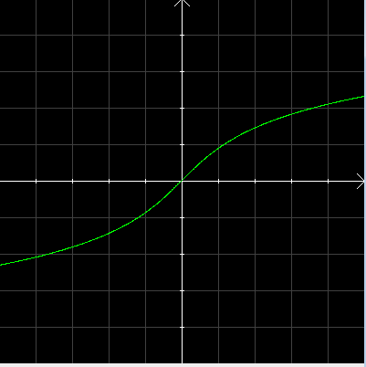
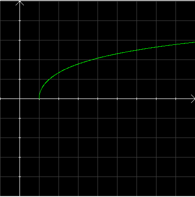
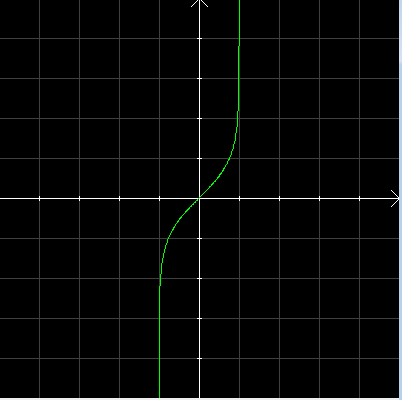
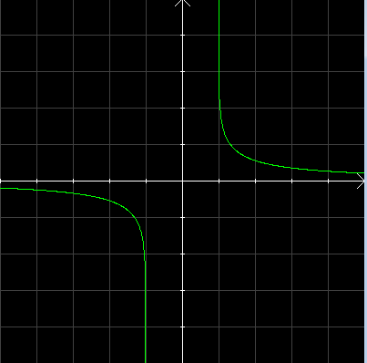

Les preuves des affirmations suivantes sont des applications directes du cours, certaines sont proposées en exercice.
Argument sinus hyperbolique
The proofs of the following assertions are direct applications of the course, some are offered as exercises.
Area hyperbolic sine
propriété 1
Il résulte de la définition de la fonction sinh et de ses propriétés que cette fonction possède une fonction réciproque notée argsh et appelée 'argument sinus hyperbolique', définie sur ℝ et à valeurs dans ℝ
property 1
It follows from the definition of the sinh function and its properties that this function has an inverse function denoted arsinh or sinh-1 and called 'area hyperbolic sine ', defined on ℝ and with values in ℝ
Représentation graphique de la fonction argument sinus hyperbolique :
Graphical representation of the area hyperbolic sine function:

propriété 2
Cette fonction est impaire, strictement croissante, continue et dérivable sur son domaine et de dérivée :
Il résulte de la définition de la fonction cosh et de ses propriétés que cette fonction possède une fonction réciproque notée argch et appelée 'argument cosinus hyperbolique' de [1,+∞[ sur [0,+∞[.
property 5
It follows from the definition of the cosh function and its properties that this function has an inverse function denoted arch or cosh-1 and called 'hyperbolic cosine argument' from [1,+∞[ onto [0,+∞[.
Représentation graphique de la fonction argument cosinus hyperbolique :
Graphical representation of the area hyperbolic cosine function:

propriété 6
Cette fonction est strictement croissante, continue et dérivable sur son domaine et de dérivée :
Il résulte de la définition de la fonction tanh et de ses propriétés que cette fonction possède une fonction réciproque notée argth et appelée 'argument tangente hyperbolique' de [-1,+1[ sur [-∞,+∞[.
property 9
It follows from the definition of the function tanh and its properties that this function has an inverse function denoted arth or tanh-1 and called 'area hyperbolic tangent' from [-1,+1[ onto [-∞,+∞[.
Représentation graphique de la fonction argument tangente hyperbolique :
Graphic representation of the area hyperbolic tangent function:

propriété 10
Cette fonction est impaire, strictement croissante, continue et dérivable sur son domaine et a pour dérivée :
\( \displaystyle argth'(x)=\frac{1}{1-x^{2}} \)
property 10
This function is odd, strictly increasing, continuous and differentiable on its domain and has for derivative:
\( \displaystyle arth'(x)=\frac{1}{1-x^{2}} \)
propriété 11
La fonction argth possède une forme logarithmique :
Il résulte de la définition de la fonction cotanh et de ses propriétés que cette fonction possède une fonction réciproque notée argcoth et appelée 'argument cotangente hyperbolique' de ]-∞,-1[ ∪ ]1,+∞[ sur ℝ* .
property 13
It follows from the definition of the function cotanh and its properties that this function has an inverse function denoted arcoth or cotanh-1 and called 'area hyperbolic tangent' from ]-∞,-1[ ∪ ]1,+∞[ onto ℝ* .
Représentation graphique de la fonction argument cotangente hyperbolique :
Graphical representation of the area hyperbolic cotangent function:

propriété 14
Cette fonction est impaire, strictement décroissante sur ]-∞,-1[, strictement décroissante sur ]1,+∞[, continue et dérivable sur son domaine et a pour dérivée :
\( \displaystyle argcoth'(x)=\frac{1}{1-x^{2}} \)
property 14
This function is odd, strictly decreasing on ]-∞,-1[, strictly decreasing on ]1,+∞[, continuous and differentiable on its domain and has for derivative:
\( \displaystyle arcoth'(x)=\frac{1}{1-x^{2}} \)
propriété 15
La fonction argcoth possède une forme logarithmique :